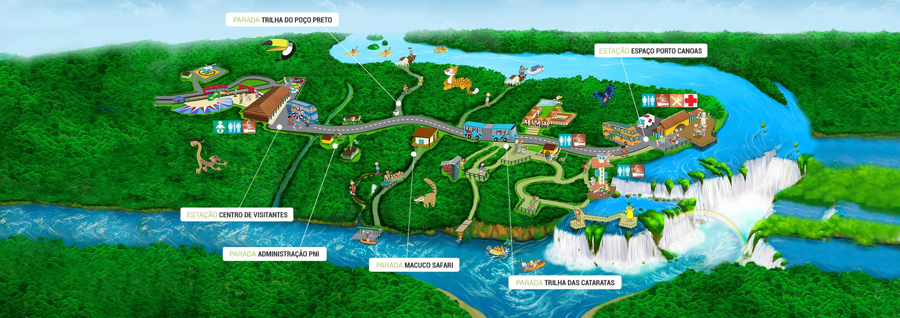

Cataratas do iguaçu
Cataratas do Iguaçu é um conjunto de cerca de 275 quedas de água no rio Iguaçu, localizada entre o Parque Nacional do Iguaçu, Paraná, no Brasil, e o Parque Nacional Iguazú em Misiones, na Argentina, na fronteira entre os dois países.
Parque Nacional do iguaçu

Localização das areas do parque

Conjunto das cachoeiras